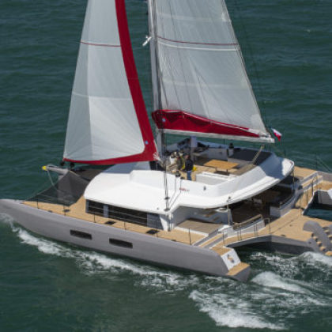

Formes de coques
Formes principales
Les formes de coques peuvent globalement être classées en 4 types :
Fond plat
Fond rond
Fond en V
Multicoque
Fond Plat

fond rond
Multicoque

Bouchain
Le bouchain (2) est une partie du bordé du navire. représentant la zone intermédiaire entre le bordé de fond (3) et le flanc (1) (appelé aussi muraille si bordé est vertical sur les cotés du navire).
Selon la construction et la forme de la coque il prend un nom différent :
Bouchain en "forme" ou doux (arrondi)

Bouchain vif
Bouchain "dur"
L'étrave - la proue